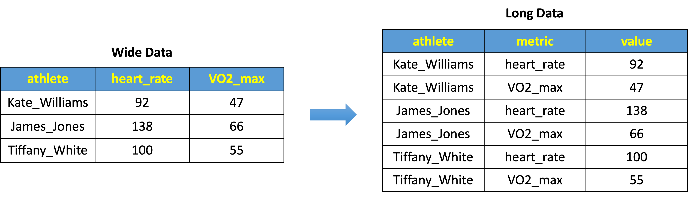

install.packages(c("dplyr", "tidyr", "readr", "stringr", "visdat"), repos="https://cloud.r-project.org/")Data Wrangling: Cleaning and Tidying Raw Data
Transforming and Refining Raw Sports Data for Insightful Analysis
Abstract
Dive into the intricacies of data wrangling to unveil the true potential of sports data. This lesson is dedicated to transforming raw datasets into a structured, analysis-ready format, essential for extracting actionable insights. We navigate through data cleaning and tidying, employing tools from R’s tidyverse to refine and reshape datasets for sports and exercise science applications. Designed for sports analysts and practitioners, this lesson offers a hands-on approach to mastering the art of data wrangling, focusing on practical techniques for dealing with common data challenges. From parsing strings to reshaping data formats, you’ll emerge equipped with the skills to turn raw numbers into compelling stories and evidence-based decisions.
Keywords
Data wrangling, data cleaning, data tidying, data transformation, data organization, data manipulation, tibble, data analysis, sports analytics, R, tidyverse, dplyr, tidyr, stringr, visdat, speedsR.
Lesson’s Level
The level of this lesson is categorized as BRONZE.
Lesson’s Main Idea
- Data wrangling, cleaning, and tidying form the bedrock of meaningful sports analytics, transforming raw datasets into structured, insightful sources.
- Mastering these processes in R’s
tidyverseempowers practitioners to reveal hidden patterns and insights essential for data-driven decision-making in sport and exercise science science.
Dataset Featured In This Lesson
Disclaimer: The dataset featured in this lesson is entirely fictitious and has been artificially created for pedagogical purposes. Any resemblance to actual persons, living or deceased, or real-world data is purely coincidental and not intended.
1 Learning Outcomes
By the end of this lesson, you will have honed the ability to:
Manage and Concatenate Data Files: Skillfully manage and concatenate multi-file datasets, harnessing the power of R to streamline data preparation processes in sport analytics.
Execute Data Wrangling Techniques: Apply robust data wrangling methods to transform raw datasets into analyzable formats, enabling deeper insights in sport and exercise science.
Organize, Reshape, and Order Data Effectively: Implement data tidying techniques to structure and reshape datasets, as well as order temporal data, facilitating easier manipulation, modeling, and visualization.
Ensure Data Precision: Master data cleaning strategies to rectify inaccuracies and standardize datasets, ensuring precision and consistency for accurate sports data analysis.
3 Tools for Data Wrangling, Cleaning, and Tidying
3.1 dplyr package in R
dplyr is a fundamental package in R for data wrangling, cleaning, and tidying. In our lesson, we tap into a small yet powerful portion of dplyr’s capabilities. We use functions like distinct() to remove duplicates and gsub() for fine-tuning string values, which are key for tidying column names. Additionally, rename() plays a crucial role in making our data more readable and consistent. These functions are just examples; dplyr offers a broad range of tools that are incredibly useful for cleaning and organizing data, especially vital for sport science data analysis.
3.2 tidyr package in R
The tidyr package is a key player in the R environment for data tidying. It offers specialized functions like gather() for reshaping data from wide to long formats, a critical step for data analysis. We also utilize tidyr’s separate() function, which allows us to split complex column entries into simpler, more manageable parts. Used alongside str_sub() from the stringr package, tidyr boosts our ability to efficiently clean and structure data. This combination of tools makes tidyr an essential package for data scientists, especially in sports science where data clarity and precision are paramount.
Both dplyr and tidyr, key components of the tidyverse collection of R packages designed for data science, play a crucial role in transforming raw, messy, and cluttered datasets into clean, structured formats ready for analysis. Their combined functionalities tackle a wide range of data wrangling tasks, establishing them as essential tools in the data science toolkit, especially for those in sports science and related fields.
4 Key Steps in Wrangling, Cleaning, and Tidying
Here, we provide a list of data cleaning and tidying steps that we cover in this lesson. The order of these steps is standard and conventional accepted in the data science industry.
Load and concatenate datasets: starting with data loading is a standard approach and sets the foundation for the rest of data manipulation.
Explore and diagnose the dataset: before cleaning, it’s essential to understand what the data looks like.
Clean column names: this step is crucial for ease of the entire data manipulation process.
Handling missing data: addressing missing data early in the process is a common practice in data cleaning.
Replacing certain values: replacing values both in specific columns and across the dataset is a valuable skill and comes handy, for instance, for handling missing values.
Dealing with duplicates: identifying and removing duplicates is a key step in data cleaning.
Splitting by index and by character: these more advanced data manipulation techniques come handy for handling strings and categorical variables.
Data types: understanding and modifying data types is crucial before performing any analytical operations.
String parsing: this section involves converting string data to a numeric format, which is a common task.
Dates formatting and ordering: handling date formats is an essential skill in data science.
Reshaping data from wide to long format: this crucial step involves transforming your data into a format that is most conducive for subsequent analyses, focusing on the optimal structure for in-depth exploration.
Overall, this lesson covers a comprehensive range of data cleaning and tidying techniques. It naturally progresses from basic to more advanced topics.
5 Wrangling, Cleaning, and Tidying an ‘Unclean’ Dataset
5.1 Install and Load Libraries
Most of the libraries required for this lesson are readily available on CRAN and can be installed using the command install.packages("NameOfPackage"), if they are not already installed on your computer:
Another library required for this lesson, speedsR, is specifically designed for the AIS SPEEDS project. This package, not available on CRAN, offers an extensive collection of sports-specific datasets, including the one used in this lesson. speedsR can be downloaded from the AIS SPEEDS GitHub repository and integrated into any R-based Integrated Development Environment (IDE). A detailed instruction on how to install and load speedsR is provided in the dedicated section of our website.
After you have installed all the required packages, you can load them into your current R session as follows:
rm(list = ls()) # clear the workspace
library(dplyr) # provides functions for manipulating datasets
library(tidyr) # tools for tidying data, reshaping and restructuring datasets
library(readr) # offers fast and user-friendly functions to read tabular data into R
library(stringr) # simplifies the process of working with strings, providing consistent and easy-to-understand functions
library(visdat) # enables visual inspection of data quality and structure
library(speedsR) # collection of sports-specific benchmark datasets - part of the AIS SPEEDS project5.2 Load Datasets From The speedsR Package And Save As CSV Files
As noted in the disclaimer, the dataset used in this lesson is synthetically designed for educational purposes and provided through the speedsR package. This dataset is structured as a multi-file dataset, replicating the kind of data formats sport and exercise science practitioners might encounter in their professional practice.
Workflow Note
The sequence we adopt in this lesson—loading data from speedsR, saving it as CSV files, and then reloading these files—is specifically designed for educational purposes. This approach deviates from typical workflows found in the industry and is aimed at providing hands-on experience with common data manipulation techniques in R.
Our educational workflow involves the following key steps:
Initial data loading from
speedsR: we start by loading the multi-file dataset into the RStudio environment directly from thespeedsRpackage.Local saving as multiple CSV files: subsequently, we save this dataset into several CSV files on our local machine. This step, while not typically found in standard data analysis workflows, is necessary for our educational objective.
Re-loading from CSV files using a naming pattern: the primary focus of this section is to demonstrate how to efficiently load datasets initially stored across multiple CSV files with a naming pattern. This is a common scenario in real-world data analysis, and we use the function
list.files()to achieve this. However, to get to this demonstration, we first need to create the scenario by saving our dataset into multiple CSV files.
The reason for this additional step is that the dataset, originally available through the speedsR package, needs to be converted into a format that mimics a real-world scenario. By first saving the dataset into multiple CSV files and then reloading it, we are simulating a typical situation where a practitioner would need to load data that is dispersed across various files with a consistent naming pattern. This teaching approach is designed to provide practical experience in handling and navigating multi-file datasets commonly encountered in the field, whether the data is stored locally or in the cloud.
Through this unique workflow, our aim is to equip learners with the skills to manage datasets in formats they are likely to encounter in their professional data analysis tasks, enhancing their proficiency in using R for real-world data handling challenges.
To extract datasets from speedsR and make them available for use in this lesson, we employ a loop that iterates through a list of dataset names. This approach utilizes R functions to efficiently load each dataset and then save it as a CSV file. The get() function is crucial for loading the datasets by their names, while paste0() helps in constructing the filenames for saving. Finally, write_csv() is employed to save each dataset into its corresponding CSV file.
# List of dataset names from speedsR
dataset_names_from_speedsR <- c("cycling_untidy_fictitious_data_1",
"cycling_untidy_fictitious_data_2",
"cycling_untidy_fictitious_data_3",
"cycling_untidy_fictitious_data_4",
"cycling_untidy_fictitious_data_5")
# Loop through each dataset name from speedsR package
for (dataset_name in dataset_names_from_speedsR) {
# Use 'get()' to load the dataset from speedsR using its name
# 'get()' retrieves an object (here, a dataset) by its name given as a string
dataset <- get(dataset_name)
# Use 'paste0()' to create a file name for saving the dataset
# 'paste0()' concatenates strings, here it adds ".csv" to the dataset name
file_name <- paste0(dataset_name, ".csv")
# Save the loaded dataset as a CSV file with the name created above
write_csv(dataset, file_name)
}This code showcases the power of automation in R. The loop structure simplifies the task of handling multiple datasets, allowing us to load and save each dataset from speedsR with minimal repetition of code. The combined use of get(), paste0(), and write_csv() functions streamlines the process, making the datasets accessible for the subsequent steps of our data wrangling lesson.
5.3 Load and Concatenate Datasets
In the previous step, we saved our multi-file dataset into several CSV files. Now, to mimic a real-world scenario where sport and exercise science practitioners often work with multiple data files, we’ll demonstrate how R’s robust functionality can streamline the process of combining these files. Using list.files(), we’ll efficiently identify files with a consistent naming pattern. The base R function lapply() and the read_csv() function from the readr package will then be used to read each of these files into R as individual tibbles. Finally, bind_rows() from dplyr will seamlessly merge these data frames into a single cohesive dataset. This method is time-efficient, ensures completeness, and is critical for accurate data analysis in sports science.
# Get a list of all files in the *current directory* that match the pattern “cycling_untidy_fictitious_data_.*csv”
# Store the name of each file in a vector 'cycling_files'
cycling_files <- list.files(pattern = 'cycling_untidy_fictitious_data_.*csv')
# Read each file in 'cycling_files' into a tibble, storing all the tibbles in 'cycling_list'
cycling_list <- lapply(cycling_files, read_csv)
# Concatenate all tibbles in 'cycling_list' together
cycling_data <- bind_rows(cycling_list)For further insights into best practices of file concatenation and merging, please refer to our Data Organization, Merging, and Concatenation lesson.
5.4 Understanding Tibbles vs Dataframes in R
After successfully loading and concatenating our datasets from the speedsR package and CSV files, it’s important to note that these datasets were loaded as tibbles, a specific type of data structure in R. This distinction is crucial for understanding how our concatenated dataset, cycling_data, behaves and interacts with R functions.
5.4.1 What is a Tibble?
A tibble, introduced by the tibble package within the tidyverse, is a modern reimagining of the data frame. When datasets are loaded using tidyverse functions like read_csv(), they are read in as tibbles, indicated by the data type spec-tbl-df or tbl-df. This format enhances the data frame structure with improved printing and subsetting methods that are more suitable for data analysis workflows.
5.4.2 Key Differences and Advantages
Printing: Tibbles provide a more concise printed output, displaying only the first ten rows and all columns that fit on the screen. This approach is particularly useful for large datasets, offering a quick snapshot without overwhelming the console.
Subsetting: Tibbles are less likely to change types when you subset rows, and they never change the types of variables when you subset columns. This consistency ensures more predictable and reliable results during data manipulation.
Row Names: Unlike traditional data frames, tibbles do not use row names. This design choice simplifies operations and reduces confusion, especially for newcomers to R.
Non-standard Columns: Tibbles can handle columns containing complex objects, like lists or matrices, without simplifying or altering the structure, which is a limitation in regular data frames.
5.4.3 Why Use Tibbles?
The primary reason for using tibbles in data science is their user-friendly nature. They simplify the exploration and manipulation of data, especially in the early stages of analysis. With tibbles, practitioners can focus more on the data and less on wrestling with data types and structures. In our lesson, since all datasets were loaded and concatenated as tibbles, the final cycling_data dataset is also a tibble (tbl_df). This makes it easier to work with using tidyverse functions and streamlines the data analysis process.
5.5 Explore and Diagnose the Dataset
After consolidating our cycling data into one dataset, the next step is to explore and diagnose it. This initial exploration is crucial as it helps us understand the structure and characteristics of our data before diving into more complex analysis.
Let’s start by examining the first few rows of the dataset using the head() function. This function displays the top rows and gives us a glimpse of the data types and values we are working with.
# Display the first few rows of the dataset
head(cycling_data)# A tibble: 6 × 8
ID Race_date Team participant `Gender AGE` `heart RATE` `DISTANCE km`
<dbl> <chr> <chr> <chr> <chr> <dbl> <dbl>
1 1 07-06-2023 Victoria… Mary_White <NA> NA 36.5
2 2 15-11-2023 Queensla… Elizabeth_… F33 146 66.3
3 3 11-06-2023 Tasmania… Robert_Smi… M18 73 90.6
4 4 <NA> <NA> Jennifer_W… F25 123 NA
5 5 18-07-2023 Tasmania… Mary_Jones F19 69 88.1
6 6 20-02-2023 Queensla… Mary_Smith F30 67 49.1
# ℹ 1 more variable: `VO2 MAX` <chr>Next, we use the summary() function to obtain a basic descriptive statistical summary of the dataset.
# Get a statistical summary of the dataset
summary(cycling_data) ID Race_date Team participant
Min. : 1.0 Length:35 Length:35 Length:35
1st Qu.: 9.5 Class :character Class :character Class :character
Median :18.0 Mode :character Mode :character Mode :character
Mean :18.0
3rd Qu.:26.5
Max. :35.0
Gender AGE heart RATE DISTANCE km VO2 MAX
Length:35 Min. : 60.00 Min. :31.44 Length:35
Class :character 1st Qu.: 89.75 1st Qu.:48.84 Class :character
Mode :character Median :115.00 Median :71.23 Mode :character
Mean :113.67 Mean :67.75
3rd Qu.:139.50 3rd Qu.:83.21
Max. :175.00 Max. :97.06
NA's :5 NA's :7 Lastly, using nrow() reveals the number of rows in the dataset. The ‘L’ suffix in outputs like ‘35L’ indicates an integer value, distinguishing it from numeric (floating-point) types. This distinction is important in R for memory usage and certain operations, as R treats integers and numerics differently. Note, that you can also use the dim() function to find out the full dimensions of the dataset.
# Find out the number of rows in the dataset
nrow_cycling_data <- nrow(cycling_data)This basic exploration sets the stage for further data wrangling and more in-depth analysis.
5.6 Clean Column Names
Cleaning and standardizing column names is a crucial step in data preparation, ensuring ease of data manipulation and consistency throughout analysis. In this section, we’ll refine the column names of our dataset for better readability and standardization.
To view the original column names in our dataset, we use the colnames() function:
# Retrieve and print the original column names from the dataset
col_names <- colnames(cycling_data)
print(col_names)[1] "ID" "Race_date" "Team" "participant" "Gender AGE"
[6] "heart RATE" "DISTANCE km" "VO2 MAX" 5.6.1 Standardizing to Lower Case
Converting all column names to lower case is our initial step. This standardizes the format, making subsequent processing more consistent and less error-prone. In R, column names are case-sensitive; thus, ‘Age’ and ‘age’ would be treated differently. Standardizing to lower case avoids confusion, simplifies code readability, and sets the stage for further modifications.
# Convert all column names to lower case for consistency and ease of use
col_names <- tolower(col_names)5.6.2 Trimming White Spaces
Our next focus is removing any leading or trailing white spaces, ensuring clean and error-free column names. The regular expression ^\\s+|\\s+$ in the gsub() function serves this purpose by identifying and eliminating unwanted spaces at the beginning and end of each string.
# Remove any leading and trailing white spaces from the column names
# '^\\s+' matches leading spaces and '\\s+$' matches trailing spaces
col_names <- gsub("^\\s+|\\s+$", "", col_names)The ^\\s+ part of the expression matches one or more (+) whitespace characters (\\s) at the beginning (^) of the string. The | is the logical OR operator in regular expressions. It allows for matching either the pattern before or after it. The \\s+$ part matches one or more whitespace characters at the end ($) of the string. This step is vital for maintaining a neat and error-free dataset structure.
Note
gsub() is a vectorized function, which means it can operate on multiple strings at once. Therefore, using gsub() directly on a vector of strings (like column names) is more efficient than using lapply().
Checking for White Spaces in Column Names
The grepl() function in R serves as a powerful tool for detecting patterns within strings. It can be particularly useful for identifying the presence of white spaces in column names. For instance, using grepl("^\\s+|\\s+$", col_names) checks each name in col_names for any leading (^\\s+) or trailing (\\s+$) white spaces. The result is a logical vector, where TRUE indicates the presence of white spaces and FALSE their absence, helping you identify which column names need attention.
5.6.3 Replacing Spaces with Underscores
To further enhance readability, we replace spaces in the column names consisting of multiple words with underscores, following the ‘snake_case’ naming convention. This format is widely used in programming for its clarity and ease of reading.
# Replace spaces with underscores to ensure column names follow snake_case format
col_names <- gsub(" ", "_", col_names)5.6.4 Applying the Cleaned Column Names
Now we can apply the cleaned and standardized column names back to our dataset. This ensures that all subsequent operations and analyses utilize these optimized names.
# Apply the cleaned column names back to the dataset
colnames(cycling_data) <- col_names5.6.5 Renaming Specific Columns
After general cleaning, we manually rename specific columns for additional clarity or to adhere to standard naming conventions. This step tailors the dataset to our specific analysis needs.
# Manually rename specific columns for clarity and standardization
# Example: renaming 'vo2_max' to 'VO2_max' and 'id' to 'ID' for better readability or convention
cycling_data <- rename(cycling_data, VO2_max = vo2_max, ID = id)5.6.6 Verifying Changes
A quick check of the updated column names confirms our cleaning efforts, marking a successful end to this crucial data preparation step.
# Print the updated column names to verify changes
colnames(cycling_data)[1] "ID" "race_date" "team" "participant" "gender_age"
[6] "heart_rate" "distance_km" "VO2_max" By following these steps, we ensure that our dataset’s column names are clean, consistent, and conducive to efficient data analysis. This meticulous approach sets a strong foundation for all future data manipulations and analyses.
5.7 Handle Missing Data
In this section, we briefly touch upon strategies for managing missing data. Handling missing data is a critical aspect of data cleaning, involving techniques like imputation and removal. A more detailed exploration of these strategies will be covered in a separate, dedicated tutorial on our platform.
5.7.1 Count and Replace Empty Cells with NAs
Firstly, we address empty cells in our dataset by identifying and replacing them with NA values. This step ensures a uniform representation of missingness across the dataset, paving the way for more accurate analyses.
# Identify and replace empty cells with NA across the entire dataset
cycling_data[cycling_data == ""] <- NA5.7.2 Count Missing Values (NA) in Each Column
Next, we use sapply() combined with sum(is.na(x)) to count the number of missing values in each column. This approach provides a detailed view of missing data across different variables.
# Count the number of NA values in each column of the tibble
NA_count_per_column <- sapply(cycling_data, function(x) sum(is.na(x)))
print(NA_count_per_column) ID race_date team participant gender_age heart_rate
0 6 6 0 5 5
distance_km VO2_max
7 4 5.7.3 Total Count of Missing Values in the Dataset
For an overall assessment of data cleanliness, we calculate the total count of missing values in the dataset. This gives us a quick understanding of the extent of missing data.
# If you don't need to know the missing values tally per column,
# you can compute the total number of missing values in the entire tibble
total_NA_count <- sum(is.na(cycling_data))
print(total_NA_count)[1] 335.7.4 Visualizing Missing Data
Lastly, we leverage the vis_miss() function from the visdat package for a visual representation of missing data. This visualization aids in comprehending the distribution and magnitude of missingness within the dataset.
# Visualise missing data in the dataset
vis_miss(cycling_data)
This overview presents fundamental steps in handling missing data. For a comprehensive guide on tackling various types of missing data, including methods of data imputation and choosing between different strategies, stay tuned for our upcoming lesson dedicated to this topic.
5.8 Replace Certain Values
Manipulating and refining data often involves replacing specific values within a dataset. This section demonstrates two common scenarios: replacing values in a specific column and across the entire dataset.
5.8.1 Replace Values in a Specific Column
Initially, we focus on a single column. For example, we might want to update team names in the team column. This operation is particularly useful for correcting data entries or updating information based on new criteria.
# Replace values in a particular column ('team' in our example) that meet a specific condition
cycling_data$team[cycling_data$team == "Tasmania_Track"] <- "ACT_Road"5.8.2 Replace Values in the Entire Dataset
The next step is to apply a condition across the entire dataset. This is a more advanced operation, showcasing the ability to make widespread changes efficiently. Our example involves modifying numeric values in the dataset, such as replacing all numeric values below a certain threshold with a new number, while keeping unique identifiers like IDs intact.
# Modify numeric columns in the dataset, excluding the ID column.
# This operation replaces all numeric values less than or equal to 40 with 50,
# while preserving the unique identifiers in the ID column.
# The 'mutate_if' function is used here to selectively apply the replacement
# only to columns that are numeric and not the ID column.
cycling_data <- cycling_data %>%
mutate_if(~is.numeric(.) && !identical(., cycling_data$ID), ~ifelse(. <= 40, 50, .))By demonstrating these techniques, this section highlights the versatility of R in handling value replacements, both at a column-specific level and across the entire dataset. It is a vital skill for sport science practitioners looking to refine their datasets for more precise analyses.
5.9 Deal With Duplicates
In data analysis, particularly in sport and exercise science, addressing duplicate data is crucial. Duplicates can skew results and provide misleading insights, hence their accurate identification and removal are vital.
5.9.1 Identifying Duplicates
To identify duplicates, we utilize the duplicated() function. This function returns a Boolean vector with either TRUE or FALSE values indicating which rows are duplicates of any other rows in the dataset. We apply this function in two ways:
- Including the ID Column: This approach checks for completely identical rows, including any unique identifiers like the ID column. It’s useful when we need to identify rows that are exact copies of others.
# Identify duplicates including the ID column
# Useful when checking for completely identical rows including identifiers
duplicates_including_id <- duplicated(cycling_data)
# Print Boolean vector showing duplicates
print(duplicates_including_id) [1] FALSE FALSE FALSE FALSE FALSE FALSE FALSE FALSE FALSE FALSE FALSE FALSE
[13] FALSE FALSE FALSE FALSE FALSE FALSE FALSE FALSE FALSE FALSE FALSE FALSE
[25] FALSE FALSE FALSE FALSE FALSE FALSE FALSE FALSE FALSE FALSE FALSE- Excluding the ID Column: Here, we ignore the ID column to focus on duplicates based on data content. This approach helps in identifying duplicates that have identical data but different IDs.
# Identify duplicates excluding the ID column
# This helps to find duplicates based on data content, ignoring unique identifiers (the ID column)
duplicates_excluding_id <- duplicated(cycling_data[-1])
# Print Boolean vector showing duplicates
print(duplicates_excluding_id) [1] FALSE FALSE FALSE FALSE FALSE FALSE TRUE FALSE FALSE FALSE TRUE FALSE
[13] FALSE FALSE FALSE FALSE FALSE FALSE TRUE FALSE FALSE FALSE FALSE FALSE
[25] FALSE FALSE TRUE FALSE FALSE FALSE FALSE FALSE FALSE FALSE TRUETo see the actual duplicate rows, we use the which() function to obtain their indices and then print these rows.
# Print rows that are duplicates (excluding ID)
# This gives a clear view of which rows are duplicate entries
duplicate_indices_excluding_id <- which(duplicates_excluding_id)
print(cycling_data[duplicate_indices_excluding_id, ])# A tibble: 5 × 8
ID race_date team participant gender_age heart_rate distance_km VO2_max
<dbl> <chr> <chr> <chr> <chr> <dbl> <dbl> <chr>
1 7 <NA> <NA> Jennifer_W… F25 123 NA 79 mL/…
2 11 19-05-2023 Queens… Michael_Jo… M20 112 41.8 52 mL/…
3 19 27-07-2023 Queens… William_Wh… M37 166 NA 30 mL/…
4 27 13-11-2023 ACT_Ro… Jennifer_W… F25 100 81.3 55 mL/…
5 35 03-12-2023 Victor… James_Will… M25 64 77.9 73 mL/…5.9.2 Removing Duplicates
After identifying duplicates, we proceed to remove them:
Excluding ID from Duplicate Check: We first exclude the ID column to focus on the content of the data.
Using
distinct(): Thedistinct()function fromdplyreliminates duplicate rows based on the remaining columns after the ID exclusion.Re-adding Sequential IDs: We use
mutate()withrow_number()to add a new ID column with sequential numbers. This preserves the order of the dataset.
# Remove duplicates from the dataset, excluding the ID column
# Preserve the order of the dataset by updating the ID column with the 'row_number()' function
cycling_data <- cycling_data %>%
select(-ID) %>% # Temporarily remove the ID column
distinct() %>% # Eliminate duplicate rows based on remaining columns
mutate(ID = row_number()) %>% # Add a new ID column with sequential numbers
select(ID, everything()) # Reorder columns to place the new ID column at the beginning5.9.3 Verifying Duplicate Removal
To ensure that duplicates have been effectively removed, we perform a final check:
Duplicate Check: We use
duplicated()again, this time to confirm that no duplicates remain after the cleaning process.Counting Duplicates: The
table()function, a versatile tool in base R, tallies the frequency of each unique element within an R object that is supplied totable()as an argument. In our case,table()counts the occurrences of TRUE (indicating duplicates) and FALSE (indicating unique rows). Post-cleaning, we expect to see no occurrences of TRUE, indicating successful removal of all duplicates.
# Verify that duplicates have been removed
duplicates_check <- duplicated(cycling_data[-1])
print(duplicates_check) [1] FALSE FALSE FALSE FALSE FALSE FALSE FALSE FALSE FALSE FALSE FALSE FALSE
[13] FALSE FALSE FALSE FALSE FALSE FALSE FALSE FALSE FALSE FALSE FALSE FALSE
[25] FALSE FALSE FALSE FALSE FALSE FALSE# Printing the output of the table() function should yield count 0 for TRUE after cleaning
print(table(duplicates_check))duplicates_check
FALSE
30 5.9.4 Understanding the Duplicate Removal Process
The process of removing duplicates should be approached with care. Ensure that the columns you choose to check for duplicates are those where duplicates are genuinely undesirable. For example, it wouldn’t make sense to remove duplicates based solely on age, as multiple athletes could be of the same age. Instead, focus on columns where uniqueness is expected.
Tip
When needing to remove every row with a duplicate value in a specific column (for instance, ‘participant’ in our ‘cycling_data’ dataset), use distinct(participant, .keep_all = TRUE). This keeps the first occurrence of each unique value in the specified column.
Managing duplicates is a key aspect of data cleaning, especially in datasets like ours where the integrity of each entry is crucial. By following these steps, sport and exercise science practitioners can ensure their data is free from redundancies, paving the way for more accurate and reliable analyses.
5.10 Split By Index
It is common to encounter columns in raw data that combine multiple pieces of information. This can be problematic for analysis, as ideally, each column should represent a single variable. We’ll demonstrate how to address this using the str_sub() function from the stringr package to separate these combined data elements.
Consider our cycling_data dataset, where we have a gender_age column combining gender and age information. Our goal is to split this data into distinct gender and age columns.
First, we isolate the gender indicator, typically represented as ‘M’ or ‘F’, from the gender_age column. We achieve this by extracting the first character and creating a new gender column:
# Extract the first character from 'gender_age' and create a new column 'gender'
# This operation isolates the gender indicator (e.g., 'M' or 'F') from the combined 'gender_age' column
cycling_data <- cycling_data %>%
mutate(gender = str_sub(gender_age, start=1, end=1))Next, we separate the age portion from the gender_age column. This involves extracting all characters starting from the second position:
# Extract the remaining characters (starting from the second character) from 'gender_age' and create a new column 'age'
# This operation separates the age portion from the combined 'gender_age' column
cycling_data <- cycling_data %>%
mutate(age = str_sub(gender_age, start=2))After splitting the data, we remove the original gender_age column to avoid redundancy, maintaining a tidy dataset:
# Remove the original 'gender_age' column as it's now split into 'gender' and 'age'
# This step cleans the dataset by removing redundant columns
cycling_data <- cycling_data %>%
select(-gender_age)Finally, we reorder the columns for a more logical structure, placing gender and age between participant and heart_rate:
# Reorder columns to place 'gender' and 'age' between 'participant' and 'heart_rate'
cycling_data <- cycling_data %>%
select(ID, race_date, team, participant, gender, age, everything())
head(cycling_data)# A tibble: 6 × 9
ID race_date team participant gender age heart_rate distance_km VO2_max
<int> <chr> <chr> <chr> <chr> <chr> <dbl> <dbl> <chr>
1 1 07-06-2023 Vict… Mary_White <NA> <NA> NA 50 38 mL/…
2 2 15-11-2023 Quee… Elizabeth_… F 33 146 66.3 60 mL/…
3 3 11-06-2023 Tasm… Robert_Smi… M 18 73 90.6 37 mL/…
4 4 <NA> <NA> Jennifer_W… F 25 123 NA 79 mL/…
5 5 18-07-2023 ACT_… Mary_Jones F 19 69 88.1 <NA>
6 6 20-02-2023 Quee… Mary_Smith F 30 67 49.1 51 mL/…This approach ensures that each variable is distinctly represented, enhancing both the clarity and usability of our dataset for further analysis. By employing these techniques, sport and exercise science professionals can efficiently transform combined data into separate, meaningful columns, paving the way for more targeted and insightful analysis.
5.11 Split By Character
Another common situation in data wrangling arises where a single column contains compound data elements separated by a specific character. In sport science data, it’s typical to encounter such scenarios where a column might combine different types of information, like team names and class categories, separated by a character like an underscore ’_’. We’ll address this using the separate() function from the tidyr package.
Take, for example, our team column in the cycling_data dataset. This column may contain values like “ACT_Road” or “NSW_Track”, combining the team’s state and class. Our objective is to split this data into two separate columns, state_team and class, for more precise analysis.
We utilize the separate() function, specifying the underscore ’_’ as the separator:
# The 'separate()' function is used to split the 'team' column into two new columns: 'state' and 'class'
# The underscore '_' character is used as the separator
cycling_data <- cycling_data %>%
separate(team, c('state_team', 'class'), '_', extra = 'merge')The first argument, ‘team’, is the column we’re splitting. c('state_team', 'class') defines the names of the new columns to be created. The underscore ’_’ is the character we use to identify where the split should occur.
The extra = 'merge' parameter ensures that if there’s more than one underscore in the value, the remaining text after the first underscore is combined into the class column, maintaining the integrity of our data.
Splitting data by character in this manner is a powerful technique to refine and organize your dataset, making it more accessible and meaningful for deeper analysis.
5.12 Data Types
In data science, and particularly in sports and exercise science, the data type of each column in a dataset plays a pivotal role in analysis. Common data types in R include character, numeric, integer, logical, and complex. Properly formatted data types are crucial for effective analysis, as they determine what operations can be performed on the data.
Consider our cycling_data tibble. To ensure each column is optimally formatted for analysis, we first need to understand the current data types of each column. This understanding is crucial because, for instance, if a numerical category like ‘distance’ is incorrectly stored as characters, it can hinder the ability to perform numerical analyses.
We use the str() function in R to view the structure and data types of each column in our dataset:
# Use 'str()' to view the structure of the 'cycling_data' tibble
# This function gives an overview of the types of data in each column
str(cycling_data)tibble [30 × 10] (S3: tbl_df/tbl/data.frame)
$ ID : int [1:30] 1 2 3 4 5 6 7 8 9 10 ...
$ race_date : chr [1:30] "07-06-2023" "15-11-2023" "11-06-2023" NA ...
$ state_team : chr [1:30] "Victoria" "Queensland" "Tasmania" NA ...
$ class : chr [1:30] "Mountain" "Track" "Road" NA ...
$ participant: chr [1:30] "Mary_White" "Elizabeth_White" "Robert_Smith" "Jennifer_White" ...
$ gender : chr [1:30] NA "F" "M" "F" ...
$ age : chr [1:30] NA "33" "18" "25" ...
$ heart_rate : num [1:30] NA 146 73 123 69 67 112 126 140 170 ...
$ distance_km: num [1:30] 50 66.3 90.5 NA 88.1 ...
$ VO2_max : chr [1:30] "38 mL/kg/min" "60 mL/kg/min" "37 mL/kg/min" "79 mL/kg/min" ...The str() function displays the internal structure of an R object. For our cycling_data, it will show the data types of each column, allowing us to identify any columns that might be misformatted.
Now, let’s consider a practical example where data type matters. We attempt to compute the mean of the VO2_max column:
# Attempt to compute the mean of the VO2_max column
# Note: This operation will produce a warning since the column is not numeric
# This issue will be addressed in the next section
cycling_data %>% summarise(mean_VO2_max = mean(VO2_max))# A tibble: 1 × 1
mean_VO2_max
<dbl>
1 NAIf VO2_max is not stored as a numeric type, this operation will produce a warning, indicating that the data cannot be properly processed as numerical values. Such warnings highlight the importance of verifying and potentially converting data types for accurate calculations.
5.13 String Parsing
Converting data into the correct format is crucial for effective analysis. The data we encounter isn’t always in the most analysis-friendly format, as we’ll see with our cycling_data dataset.
In our cycling_data, the VO2_max column contains values suffixed with ’ mL/kg/min’, making them character strings rather than pure numeric values. This format is not suitable for numerical analysis like calculating averages or other statistical measures. To address this, we first need to parse these strings to extract the numeric part:
# Remove the non-numeric part (' mL/kg/min') from the VO2_max column
# This prepares the column for conversion to a numeric data type
cycling_data <- cycling_data %>%
mutate(VO2_max = gsub(' mL/kg/min', '', VO2_max))Here, we use gsub(), a powerful function in R for string manipulation, to replace ’ mL/kg/min’ in each entry with an empty string, effectively removing it. This step transforms the VO2_max column, prepping it for numerical conversion.
Next, we convert the VO2_max column to a numeric data type:
# Convert the VO2_max column to a numeric data type
# This allows for numerical operations to be performed on the VO2_max values
cycling_data <- cycling_data %>%
mutate(VO2_max = as.numeric(VO2_max))The as.numeric() function transforms character strings containing numerical values into numeric data types. This conversion is essential for allowing us to perform numerical operations like calculating means or sums.
Finally, we can accurately compute the mean of the VO2_max values:
# Recompute the mean of the VO2_max column, excluding NA values for accurate calculation
# The 'na.rm = TRUE' argument ensures that NA (missing) values are ignored in the mean calculation
cycling_data %>% summarise(mean_VO2_max = mean(VO2_max, na.rm = TRUE))# A tibble: 1 × 1
mean_VO2_max
<dbl>
1 51.5This example highlights the importance of string parsing and data type conversion in data analysis, especially when working with sports data.
5.14 Dates Formatting and Ordering
Date formats can be a tricky aspect of data analysis, especially in sports science where temporal data is crucial. The way dates are formatted can significantly affect how we interpret and analyze temporal trends. In our cycling_data dataset, the race_date column is initially in the ‘DD-MM-YYYY’ format. To facilitate analysis, especially when sorting or comparing dates, we need to standardize these dates into a more uniform format.
# Convert 'race_date' from 'DD-MM-YYYY' format to 'YYYY-MM-DD' format
# This specifies the current format of the dates in your dataset
# and standardizes them to the default 'YYYY-MM-DD' format for consistency and easier analysis
cycling_data <- cycling_data %>%
mutate(race_date = as.Date(race_date, format = "%d-%m-%Y"))In the above snippet, we use the as.Date() function to convert the race_date column to the ‘YYYY-MM-DD’ format. This function requires specifying the current format of the dates in your dataset, which in our case is ‘DD-MM-YYYY’. The conversion brings consistency and standardizes the dates for easier analysis.
Once the dates are standardized, arranging the data in a particular temporal order becomes much more straightforward:
# Arrange the data by 'race_date' in descending order
# This helps in analyzing the data from the most recent to the earliest dates
cycling_data <- cycling_data %>%
arrange(desc(race_date)) %>%
mutate(ID = row_number()) # Update IDs to reflect the new order after arranging dates
head(cycling_data)# A tibble: 6 × 10
ID race_date state_team class participant gender age heart_rate
<int> <date> <chr> <chr> <chr> <chr> <chr> <dbl>
1 1 2023-12-05 Queensland Mountain John_Smith M 39 NA
2 2 2023-12-03 Victoria Mountain James_Williams M 25 64
3 3 2023-11-26 Victoria Track John_Williams <NA> <NA> 170
4 4 2023-11-18 Tasmania Mountain Tiffany_Jones F 31 175
5 5 2023-11-15 Queensland Track Elizabeth_White F 33 146
6 6 2023-11-13 ACT Road Jennifer_White F 25 100
# ℹ 2 more variables: distance_km <dbl>, VO2_max <dbl>Here, we use arrange(desc(race_date)) to order the dataset by race_date in descending order. This reordering is beneficial for analyzing data trends from the most recent to the earliest events. We also update the ID column to reflect the new order after arranging the dates. This step is particularly valuable when working with time series data.
Tip
Alternatively, for ascending order arrangement:
cycling_data <- cycling_data %>%
arrange(race_date)5.15 Reshape Data From Wide to Long Format
5.15.1 Wide vs Long Data Formats
The structure of your data can significantly influence the ease and effectiveness of your analysis. Two common data formats are wide and long.

Wide Data Format is characterized by its “wider” structure, where multiple measurements (or metrics) for each subject are stored in separate columns. For example, in a wide data format, an athlete’s heart_rate and VO2_max might be stored in two distinct columns, as shown in the left side of Fig 1. Each row in this format represents a full set of observations for one athlete.
Long Data Format, on the other hand, is “taller” and typically involves stacking the measurements vertically. Each row represents a single observation for a subject. As depicted in the right side of Fig 1, the same data is now arranged such that heart_rate and VO2_max are not separate columns but rather fall under a single ‘metric’ column, with their respective values under the ‘value’ column.
5.15.2 Why Prefer Long Format?
The long format is often more conducive to analysis because it aligns with the principles of tidy data:
- Each variable forms a column
- Each observation forms a row
In practice, this format makes filtering, summarizing, and visualizing data for specific measurements more straightforward. It is especially useful for time-series data or repeated measurements across different conditions or time points.
5.15.3 Transitioning from Wide to Long Format
The gather() function from the tidyr package is commonly used to transform data from wide to long format. It collapses selected columns (like heart_rate, distance_km, and VO2_max) into two new columns: one for the measurement type (key) and one for the values (value).
# Transform the 'cycling_data' tibble from wide format to long format.
# The 'gather()' function collapses the 'heart_rate', 'distance_km', and 'VO2_max' columns
# into key-value pairs, making the data structure more flexible for analysis.
# The '-variable' notation is used to exclude certain columns from being gathered.
# Including the '-variable' notation is optional and we include it here for completeness.
cycling_data <- cycling_data %>%
gather(heart_rate, distance_km, VO2_max, key = "measurement", value = "value", -ID, -race_date, -state_team, -class, -participant, -gender, -age)
# Arrange the reshaped data by ID and measurement types.
# This ordering helps to organize the data for each participant in a systematic way.
cycling_data <- cycling_data %>%
arrange(ID, measurement)
head(cycling_data)# A tibble: 6 × 9
ID race_date state_team class participant gender age measurement value
<int> <date> <chr> <chr> <chr> <chr> <chr> <chr> <dbl>
1 1 2023-12-05 Queensland Mounta… John_Smith M 39 VO2_max NA
2 1 2023-12-05 Queensland Mounta… John_Smith M 39 distance_km 75.8
3 1 2023-12-05 Queensland Mounta… John_Smith M 39 heart_rate NA
4 2 2023-12-03 Victoria Mounta… James_Will… M 25 VO2_max 73
5 2 2023-12-03 Victoria Mounta… James_Will… M 25 distance_km 77.9
6 2 2023-12-03 Victoria Mounta… James_Will… M 25 heart_rate 64 By applying gather(), we reshape the dataset so that each row corresponds to a single metric per athlete, rather than an athlete’s complete profile per row. Post-transformation, we use arrange() to systematically order the data by ID and measurement type.
5.15.4 Gauging Measurement Distribution
After reshaping the data, it can be insightful to count the occurrences of each measurement type:
# Count the number of occurrences of each measurement type.
# This helps to understand the distribution of different measurements in the dataset.
measurement_counts <- count(cycling_data, measurement)
print(measurement_counts)# A tibble: 3 × 2
measurement n
<chr> <int>
1 VO2_max 30
2 distance_km 30
3 heart_rate 30Understanding the distribution of different measurements within the dataset is critical. It informs us about the data’s granularity and potential areas of focus for in-depth analysis.
5.16 Data Organization in Spreadsheets: Ensuring Readiness for Analysis
Having cleaned and tidied our dataset, it’s imperative to store it correctly to ensure that it remains accessible and amenable to analysis. As we explored the various techniques of data wrangling and tidying, our approach adheres to the best practices recommended in the informative article on Data Organization in Spreadsheets. To preserve the integrity and utility of our data, we’ve followed principles that promote precision and ease of analysis. These principles include consistency in data entry, utilizing the unambiguous YYYY-MM-DD format for dates, avoiding the pitfalls of empty cells, and maintaining the discipline of single pieces of information per cell. Our data is organized in a clean rectangle, with each subject’s data captured in rows, variables in columns, and a single header row to define our dataset’s structure.
When wroking wtih your data, it should also be documented with a data dictionary. It’s advised to refrain from incorporating calculations within the raw data files and from using font colors or cell highlighting as data indicators. Proper naming conventions, routine backups, the application of data validation to circumvent entry mistakes, and saving data in a plain text format are all part of the structured approach that is recommended to follow. This level of orderliness in spreadsheet data organization is not only a matter of best practice but also a cornerstone for efficient and accurate data analysis in future endeavors.
Challenge for the Learner
Apply your data wrangling skills to refine and analyze a new dataset:
- Identify a sports dataset of interest and perform initial data cleaning steps, such as standardizing column names and handling missing values.
- Utilize string parsing to extract useful information from complex data entries, and reshape the dataset from wide to long format.
- Craft a visualization of the cleaned dataset to reveal an interesting trend or insight, using the principles of tidy data you’ve learned.
6 Conclusion and Reflection
In this lesson, we’ve honed the essential skills of data wrangling, cleaning, and tidying, crucial for insightful sports data analytics. We’ve transformed raw datasets into structured, analysis-ready formats, crucial for unearthing patterns and driving data-informed decisions.
The journey through R’s tidyverse has not only shown us how to effectively clean and restructure data but also underscored the importance of precise data transformation for reliable analysis. Applying these data refinement techniques to the diverse datasets encountered in sport and exercise science empowers you to unlock analytical potential. Each step in mastering these skills paves the way to new insights and advancements.
7 Knowledge Spot-Check
What is the primary goal of data wrangling in sports data analytics?
A) To create visually appealing reports.
B) To ensure data is formatted for easy entry into spreadsheets.
C) To transform and clean data for accurate analysis.
D) To learn programming in R and Python.
Expand to see the correct answer.
A) To create visually appealing reports.
B) To ensure data is formatted for easy entry into spreadsheets.
C) To transform and clean data for accurate analysis.
D) To learn programming in R and Python.
Expand to see the correct answer.
The correct answer is C) To transform and clean data for accurate analysis.
Which R package provides functions for both data wrangling and tidying?
A) ggplot2
B) shiny
C) readr
D) tidyverse
Expand to see the correct answer.
A) ggplot2
B) shiny
C) readr
D) tidyverse
Expand to see the correct answer.
The correct answer is D) tidyverse.
When preparing data for analysis, why is it important to standardize column names?
A) To enable merging with other datasets.
B) To prevent errors due to case sensitivity.
C) To facilitate sorting of columns alphabetically.
D) To make the dataset visually appealing.
Expand to see the correct answer.
A) To enable merging with other datasets.
B) To prevent errors due to case sensitivity.
C) To facilitate sorting of columns alphabetically.
D) To make the dataset visually appealing.
Expand to see the correct answer.
The correct answer is B) To prevent errors due to case sensitivity.
What does the R function ‘gsub()’ do in the context of data cleaning?
A) Summarizes data statistics.
B) Generates subplots for data visualization.
C) Replaces patterns in strings.
D) Groups similar data points.
Expand to see the correct answer.
A) Summarizes data statistics.
B) Generates subplots for data visualization.
C) Replaces patterns in strings.
D) Groups similar data points.
Expand to see the correct answer.
The correct answer is C) Replaces patterns in strings.
Why is the ‘long’ format often preferred over the ‘wide’ format in data analysis?
A) It is more compact and requires less disk space.
B) It typically allows for more efficient computation.
C) It facilitates easier filtering, summarizing, and visualization.
D) It is the only format supported by modern analytics tools.
Expand to see the correct answer.
A) It is more compact and requires less disk space.
B) It typically allows for more efficient computation.
C) It facilitates easier filtering, summarizing, and visualization.
D) It is the only format supported by modern analytics tools.
Expand to see the correct answer.
The correct answer is C) It facilitates easier filtering, summarizing, and visualization.